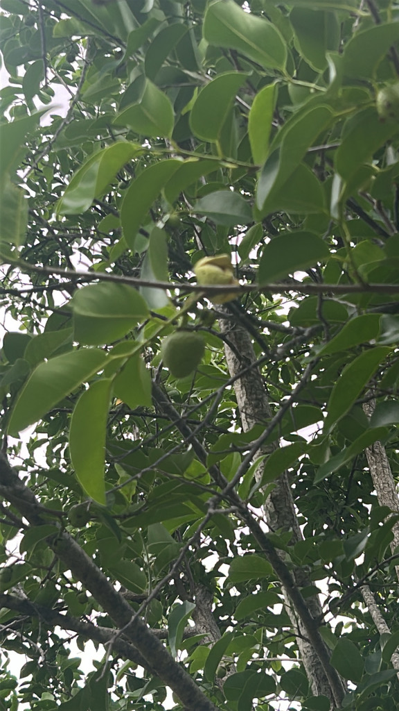

- A true Florida-native tree that grows with its feet in the water — in swamps, pond edges, and even brackish mangrove margins.
- Its yellow-green fruit gives it the names pond apple and alligator apple, after the gators that share its swampy haunts and eat the fallen fruit.
- The fruit floats, and so do the seeds — the tree spreads by letting moving water carry its crop downstream.
- It is a close cousin of the custard apple and soursop, with similar pale, custard-textured flesh.
Native to Florida, the Caribbean, tropical Central and South America, and West Africa. In Florida it is a characteristic tree of freshwater swamps, pond and lake margins, sloughs, and the upstream edges of mangrove wetlands.
- Pond apple is one of the few trees genuinely at home in standing water. It rings Florida's swamps, ponds, and sloughs and pushes right up to the brackish edge of mangrove country, tolerating flooding and some salt where most trees would drown. Its trunk often flares into a swollen, buttressed base for stability in soft, wet ground.
- The common names tell the story of its place. "Pond apple" marks its habitat; "alligator apple" nods to the gators that share the swamp and eat the dropped fruit. The yellow-green fruit is apple- to melon-sized, with soft, pale flesh.
- Water does the dispersing. Both the buoyant fruit and its flattened seeds float, drifting on swamp currents and tides to sprout elsewhere — a neat fit for a tree that lives where the water moves.
- Before early-20th-century drainage transformed South Florida, a dense belt of pond apple forest — locals called it the Custard Apple country — stretched roughly 32,000 acres along the southern and southeastern shore of Lake Okeechobee. That forest was cleared for what became the Everglades Agricultural Area, and nearly all of it is gone.
- The largest remaining concentration now grows in Everglades National Park.
- Pond apple's toughness has made it useful beyond its native swamps. Because of its hardiness and tolerance of wet, brackish soils, it is used as a grafting rootstock for less-hardy Annona relatives such as soursop and sugar apple, lending them its disease resistance and flood tolerance.
A valuable native wetland tree. Its fruit is eaten by raccoons, birds, turtles, fish, and alligators, and it is the larval host for the giant sphinx moth (Cocytius antaeus), the largest sphinx moth in North America. Growing in flooded ground, it provides cover, perches, and nesting habitat at the water's edge and helps stabilize swampy shorelines.
A small to medium deciduous to semi-evergreen wetland tree (bare-branched in winter), often with a swollen, buttressed base, growing in or beside water.
Solitary, pale yellow to cream, three-petaled, with a reddish inner blotch.
Yellow-green, apple- to melon-sized, with soft pale custard-like flesh; floats.
Glossy, leathery, oblong, dark green.
A glossy-leaved tree standing in or right beside the water, often with a flared base, hung with yellow-green apple-like fruit. Its waterside footing is itself the best clue. In winter, when the tree drops its leaves, look for the distinctly swollen, buttressed trunk base standing right out of the water.
The ripe pulp is technically edible but mealy and bland — far more appealing to wildlife than to people.
The seeds, bark, and leaves are the hazard: they contain toxic acetogenins and must never be eaten.
Keep pets from chewing fallen fruit or seeds. It isn't specifically ASPCA-listed, but the seed toxicity warrants the same caution as for people.


- © Denise Sosa (CC-BY-NC), via iNaturalist
- © Maria Escobar (CC-BY-NC), via iNaturalist
- © Randall Carter (CC-BY-NC), via iNaturalist